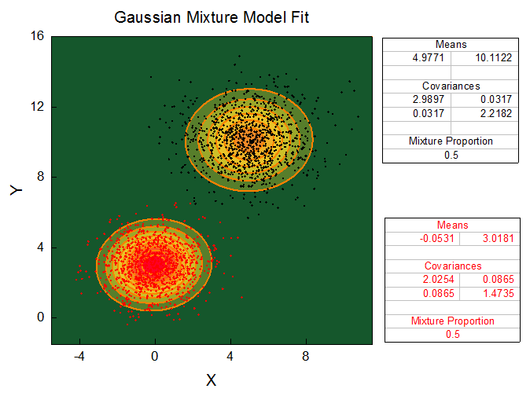

In diesem Beispiel analysieren wir ein TEM-Bild und ermitteln die Daten der Radiusverteilung, indem wir die Matlab-Funktion imfindcircles() über das MATLAB-Befehlsfenster in Origin 2016 aufrufen. Nachdem wir die Ergebnisdaten in MATLAB erhalten haben, verwenden wir das Hilfsmittel für den MATLAB-Import, um die Daten an das Origin-Arbeitsblatt weiterzugeben. Ein Histogramm des Partikelradius mit einer Verteilungskurve wird in Origin 2016, wie im folgenden Bild zu sehen, gezeichnet. Wir führen auch die Spaltenstatistik durch, um den Mittelwert und die Standardabweichung zu ermitteln, und fügen eine formatierte Gleichung in das Diagramm ein.
In diesem Beispiel haben wir zufällig verteilte Daten für X-Position, Y-Position und Z-Position erzeugt. Wir haben dann die MATLAB-Funktion convhull() für 3D-Daten über die MABLAB-Konsole in Origin aufgerufen, um die Indizes der konvexen Hull-Punkte zu berechnen. Wir haben die Daten der konvexen Hull-Indizes in Origins Arbeitsblatt importiert und diese Informationen verwendet, um eine dreieckig geformte Oberfläche zu erstellen, die alle Datenpunkte umfasst.

In diesem Beispiel haben wir die Daten, die zwei Peakbereiche (schwarzes und rotes Punktdiagramm) beinhalten, vorbereitet. Um solche Daten anzupassen, haben wir zuerst die MATLAB-Funktion cluster() aufgerufen, um zwei Peakbereiche in zwei Gruppen zu "clustern" (Der geclusterte Infodatensatz wird in Origin importiert und zum Färben der Daten verwendet). Danach haben wir unter Verwendung der Funktion fitgmdist() eine Anpassung mit dem Gaussian-Mischungsmodell auf die Daten durchgeführt und ein Konturdiagramm auf Gundlage der angepassten Parameter simuliert. Am Ende haben wir das Konturdiagramm benutzerdefiniert angepasst, um die angepassten Ergebnisse besser anzeigen zu können.
